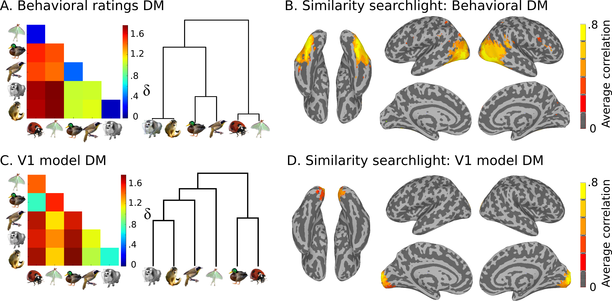

Introduction¶
Goals of the workshop¶
Learn the basics of Multivariate Pattern Analysis
Get your hands dirty with data manipulation and algorithm implementation
Build a your own data analysis toolkit
Why study brain imaging?
Organization of Human Brain Mapping (OHBM) throws great parties.
OHBM 2013 in Seattle rented the Rock and Roll Museum for their “club night” party.¶
What is MVPA?
When applied to fMRI data it is multi-voxel pattern analysis.
But multi-variate analysis is general, and widely used set of techniques. Variables or features can be from all sorts of neuroscience data:
EEG
MEG
Multi-unit recording
Electrocorticography (ECoG)
… or almost anything else you can think of:
Geological data
BIG data culled from internet users
etc.
What is a pattern?
fMRI: Pattern is a vector of voxels (time points, averages of conditions, \(\beta\) stats, etc.)
In general: It is a vector of features or variables
In practice, i.e., in MATLAB: A pattern is a row vector.
A dataset is a set of patterns over the same features that are vertically stacked on one another into a 2-D N x M matrix with N patterns and M features. Patterns are sometimes called “observations” or “samples”. In this tutorial we will call them samples.
In a simplistic and generic sense, MVPA includes any analysis where the outcome is dependent on the variablility of measurements across a a samples by features matrix.
MATLAB is an ideal environment for dealing with this sort of data with hundreds of function for do MVPA analysis on rectangular matrices, some of which you may be familiar with:
corrcoef: compute the pair-wise correlations for a set of column vectors
cmdscale: classic multidimensional scaling
svmclassify / svmtrain: support vector machine
procrustes: Procrustes transformation (used in hyper-alignment, )
and many many others …
MVPA Dataset¶
Given this general formulation, our workshop will aim to build a foundation and a working MATLAB toolbox for MVP analysis around the dataset as a common starting point. For this we have adopted the terminology and many of the semantics of the PyMVPA Python library which you are encouraged to learn more about especially if you interesting in learning to program in Python.
Other useful resources:
NeuroDebian : One stop shopping for all Neuroscience related computing needs
Code for the workshop¶
Sample Dataset¶
We have preprocessed data for 8 subjects from [CGG+12]. A slow event-related design with six different types of animals.

The six categories included 2 primates: monkeys and lemurs; 2 birds: mallard ducks and yellow-throated warblers; and 2 bugs: ladybugs and luna moths.
We also have model similarity structures, which you can see here:
{kind=link}
Plan for the day¶
Learn how to manipulate data as a “cosmo_fmri_dataset”
- Do several exercises with pattern classification
Split-half correlations
Write your own Nearest-neighbor classifier
Write a wrapper for MATLAB’s support vector machine functions to work with dataset
Implement a N-Fold data partitioner for cross-validation
Write an abstraction of cross-validation as a “dataset measure”
- Representational Similarity Analysis
Viewing dissimilarity matrices
Comparing dissimilarity matrices
Write an abstraction “RSA dataset measure”
- Searchlight analysis
Implement a function to calculate sphere offsets for searchlight
Implement searchlight with cross-validation
Implement RSA searchlight
View searchlight results
In the end we will keep the cosmo_mvpa toolbox in a public repository on git-hub. Here: https://github.com/andycon/cosmo_mvpa You (or any one else) may “clone” the repository using git and contribute your own code to the project.